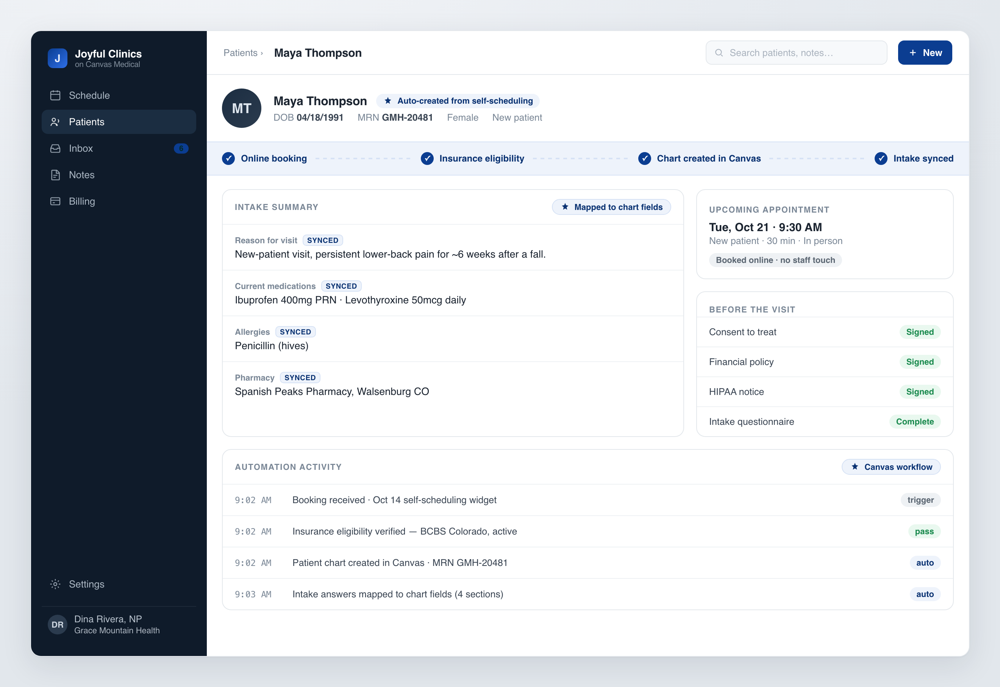
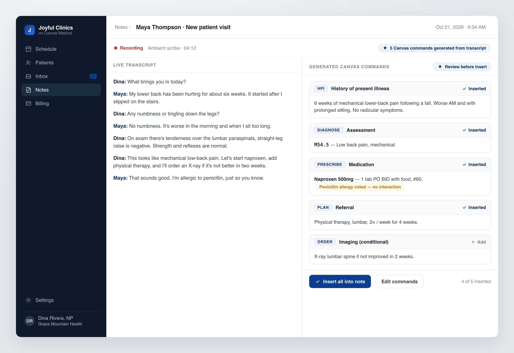
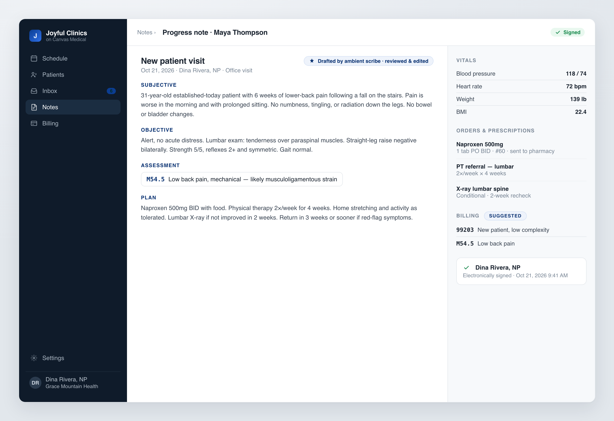
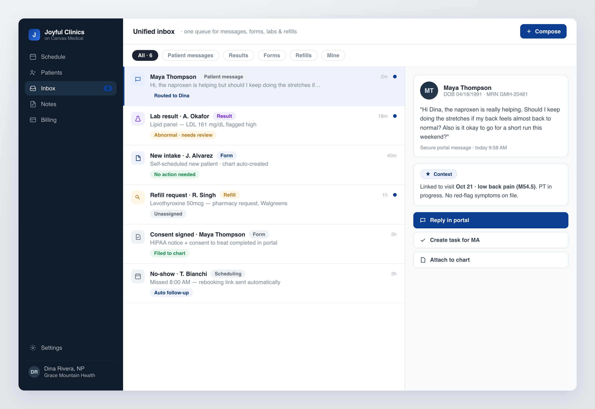

Practice with Joy runs its clinics on Canvas Medical, an API-first EHR you build on top of rather than around. I designed the automation layer: intake that creates its own chart, an ambient scribe that writes the note, and one inbox for everything, so a solo nurse practitioner spends their time on patients, not paperwork.

Practice with Joy helps independent nurse practitioners launch their own clinics. For a solo NP, the practitioner is the clinic, and every minute spent on admin is a minute not spent with a patient, or not spent at home.
The admin adds up fast: re-typing intake forms into the chart, chasing consents, writing notes after hours, and tracking messages, labs and refills across a handful of disconnected tools. We run the clinics on Canvas Medical, a programmable, API-first EHR. That gave us a solid clinical core and an interface to build against. The design job was to put a layer on top of it so the repetitive work quietly disappears.
Intake that builds its own chart. A patient self-schedules online. Before anyone on staff touches it, the booking verifies insurance eligibility, creates the patient's chart in Canvas, and maps their intake answers into the right clinical fields (above). The rule was "no staff touch for the happy path," and the automation trail is shown so the clinician can trust exactly what was assembled.

The visit writes the note. During the appointment an ambient scribe turns the conversation into structured Canvas commands, the EHR's native building blocks, rather than a wall of free text. A diagnosis becomes a coded assessment; a plan becomes a prescription and a referral. The clinician reviews and approves each one, and allergy and interaction checks surface right where the decision is made. The scribe proposes; the human stays in control.

A note that is finished in the room. By the time the patient leaves, the note is a signed SOAP note with orders sent to the pharmacy and billing codes already suggested. Charting stops being after-hours homework, and the suggested codes close a quiet revenue leak: solo practices routinely under-code because coding at the end of a long day is the first thing that slips.

One inbox instead of five. Everything that used to live in separate tools, patient messages, lab results, intake forms, refill requests, no-shows, lands in a single triage queue. Each item carries its clinical context and a set of one-click actions, and the routine pieces, filing a signed consent, sending a rebooking link, handle themselves.
On a programmable EHR you aren't drawing screens, you're designing what the system does on its own, and how much a clinician has to trust before they'll let a step disappear.
Put together, a new patient can go from booking to a visit-ready chart with no staff touch, the note is drafted during the visit instead of after hours, and the day's loose ends live in one queue instead of five. Multiple clinics now run on this setup on Canvas.
The best of the work here is mostly the work that became invisible. Clinicians don't want more software. They want fewer steps between them and their patients.